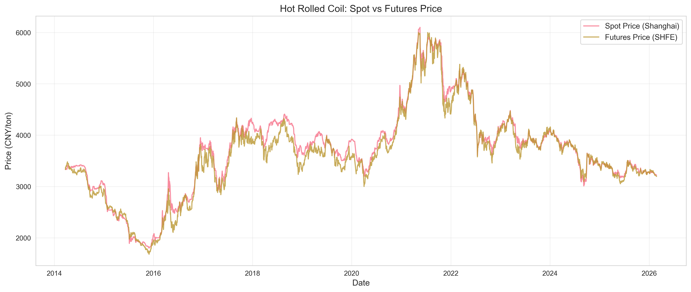
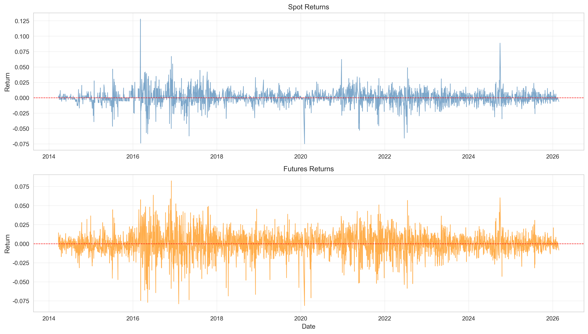
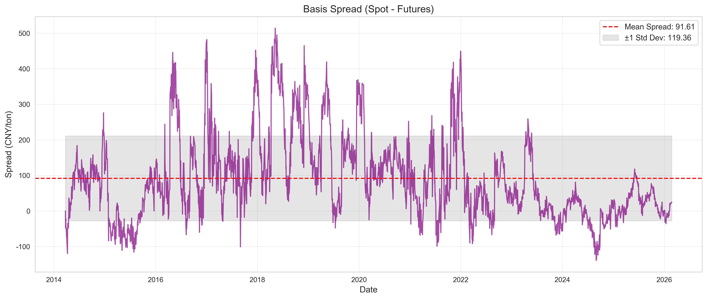
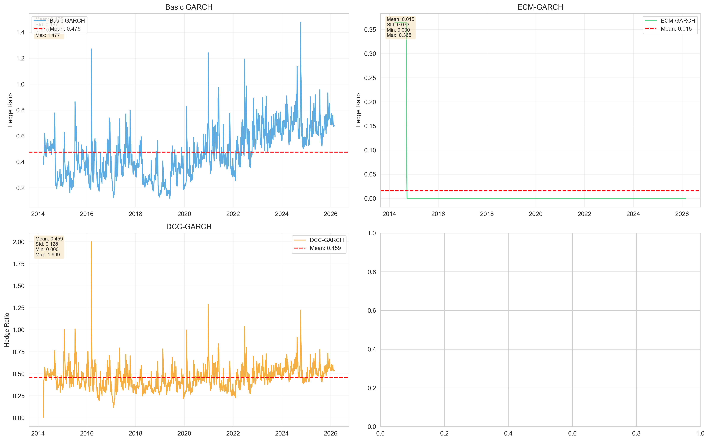
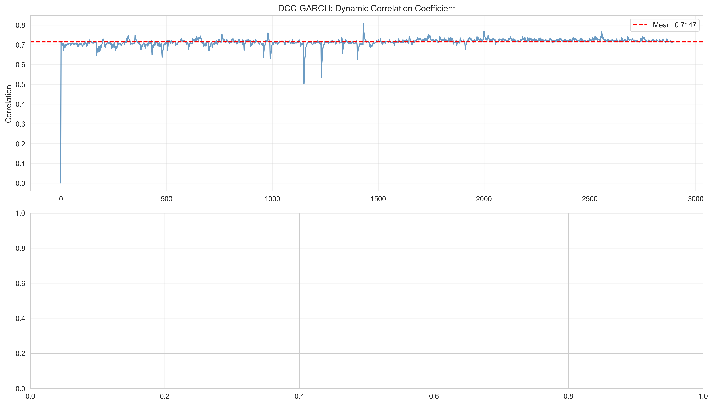
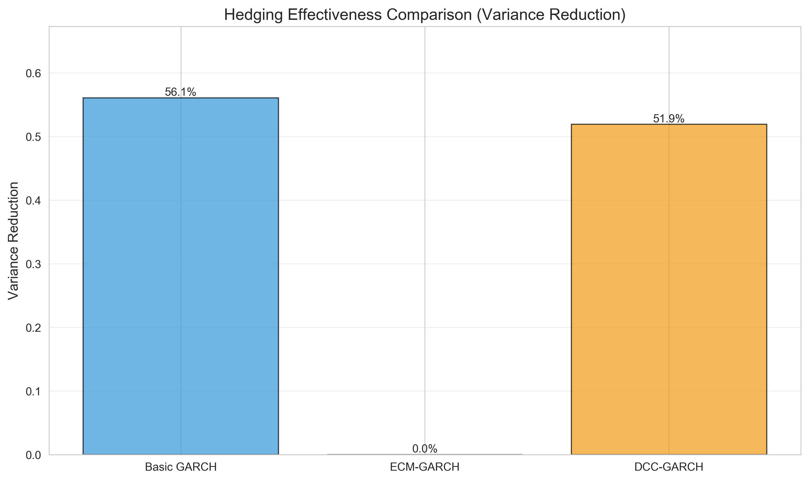
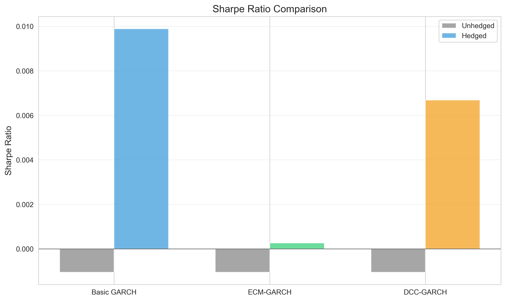
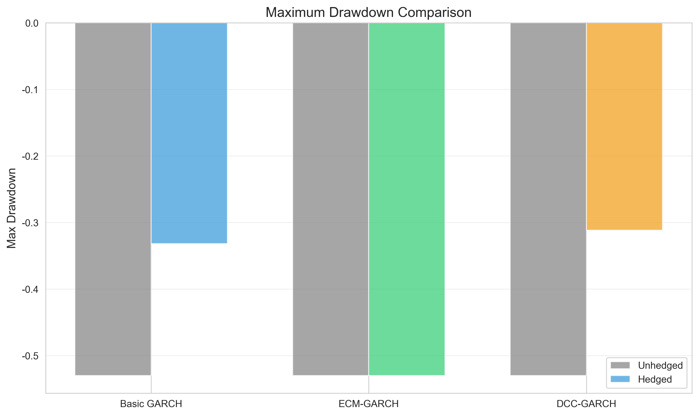
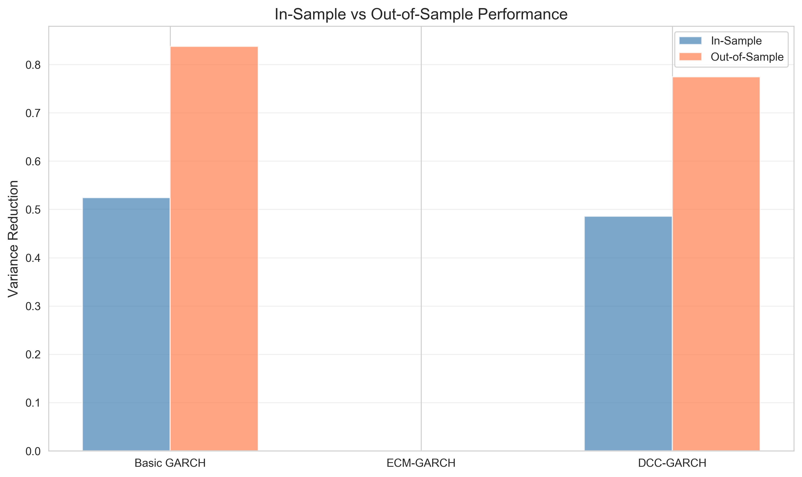

热卷现货-期货套保比例计算模型报告
生成时间: 2026-02-26 16:51:00
数据时间范围: 2014-03-24 至 2026-02-24
样本量: 2891 个交易日
执行摘要 (Executive Summary)
本报告基于条件协方差理论，为热卷上海地区现货与SHFE热卷期货构建了四种动态套保比例计算模型：
- 模型1: 基础GARCH - 使用二元GARCH模型估计时变协方差
- 模型2: ECM-GARCH - 考虑现货与期货的长期均衡关系（误差修正模型）
- 模型3: DCC-GARCH - 考虑动态时变相关性
- 模型4: ECM-DCC-GARCH - 综合模型，结合基差修正和动态相关性
核心公式
理论套保比例: h_t = Cov_t(ΔS, ΔF) / Var_t(ΔF)
实际套保比例: h_实际 = h_t / 1.13 (考虑13%增值税)
数据描述与统计特征
| 指标 |
现货价格 (CNY/ton) |
期货价格 (CNY/ton) |
| 均值 |
{spot_mean:.2f} |
{futures_mean:.2f} |
| 标准差 |
{spot_std:.2f} |
{futures_std:.2f} |
| 最小值 |
{spot_min:.2f} |
{futures_min:.2f} |
| 最大值 |
{spot_max:.2f} |
{futures_max:.2f} |
收益率统计
| 指标 |
现货收益率 |
期货收益率 |
| 均值 |
{r_s_mean:.6f} |
{r_f_mean:.6f} |
| 标准差 |
{r_s_std:.6f} |
{r_f_std:.6f} |
| 偏度 |
{r_s_skew:.4f} |
{r_f_skew:.4f} |
| 峰度 |
{r_s_kurt:.4f} |
{r_f_kurt:.4f} |
基差统计
| 均值 |
标准差 |
最小值 |
最大值 |
| {spread_mean:.2f} |
{spread_std:.2f} |
{spread_min:.2f} |
{spread_max:.2f} |
现货-期货相关系数
Pearson相关系数
{correlation:.4f}
可视化图表
1. 价格走势对比

2. 收益率波动

3. 基差时变图

4. 套保比例对比

5. 动态相关系数

套保效果对比分析
| 模型 |
方差降低比例 |
Ederington指标 |
夏普比率(套保后) |
最大回撤(套保后) |
| Basic GARCH |
56.08% |
0.5608 |
0.0099 |
-33.18% |
| ECM-GARCH |
0.01% |
0.0001 |
0.0003 |
-53.01% |
| DCC-GARCH |
51.92% |
0.5192 |
0.0067 |
-31.17% |
方差降低比例对比

夏普比率对比

最大回撤对比

样本内外测试
| 模型 |
样本内方差降低 |
样本外方差降低 |
| Basic GARCH |
52.44% |
83.74% |
| ECM-GARCH |
0.02% |
0.00% |
| DCC-GARCH |
48.57% |
77.43% |
样本内外效果对比图

模型选择建议
推荐模型: Basic GARCH
推荐理由: 该模型的方差降低比例最高（56.1%），套保效果最好。
风险提示与局限性
- 历史数据不代表未来表现
- 模型假设可能不适用于所有市场环境
- 交易成本和滑点未在模型中考虑
- 极端市场条件下模型可能失效
- 增值税税率变化会影响实际套保比例
技术细节
GARCH模型参数
所有模型均采用GARCH(1,1)设定：
σ²_t = ω + α·ε²_{t-1} + β·σ²_{t-1}
DCC模型参数
动态条件相关模型：
Q_t = (1 - α - β)·Q̄ + α·ε_{t-1}·ε'_{t-1} + β·Q_{t-1}
R_t = Q_t^{*-1/2}·Q_t·Q_t^{*-1/2}
参考文献
- Engle, R. F. (2002). "Dynamic Conditional Correlation: A Simple Class of Multivariate Generalized Autoregressive Conditional Heteroskedasticity Models."
- Kroner, K. F., & Sultan, J. (1993). "Time-varying distributions and dynamic hedging with foreign currency futures."
- Lien, D., & Tse, Y. K. (2002). "Some recent developments in futures hedging."